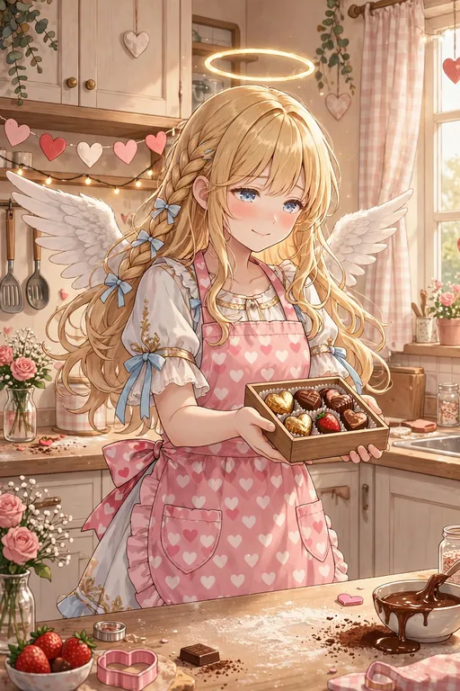

セラフィナ バレンタイン｜バレンタイン特集

バレンタインに向けた特集ページです。サービスシーン編には、ハート柄のピンクのエプロン姿で手作りチョコを差し出す場面を収録しています。感謝の気持ちを形にする、日本のバレンタインの習わしを描いた一枚です。
2027年2月14日のバレンタインには、公式SNSでの場面紹介を予定しています。2月22日のセラフィナ＆モコ生誕祭とも近い時期ですので、あわせてお楽しみください。
手作りチョコの場面は、サービスシーン編の図鑑（場面6）でも見られます。「ありがとう」を形にするというテーマは、セラフィナの「今日もおつかれさまです」という口癖にも通じる、シリーズらしいバレンタインです。